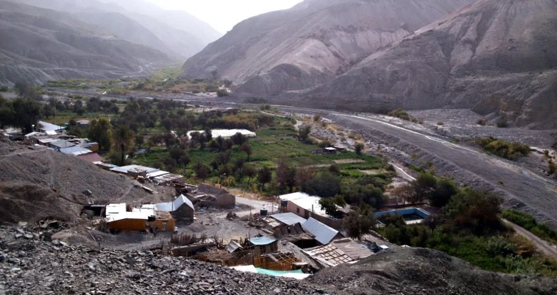
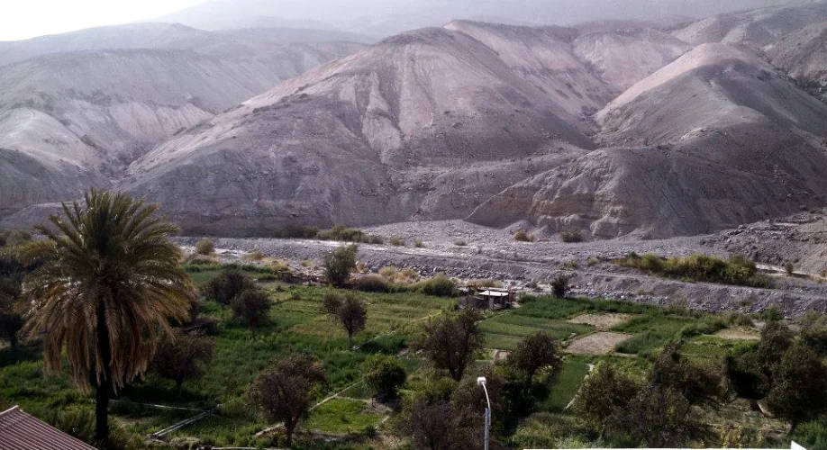
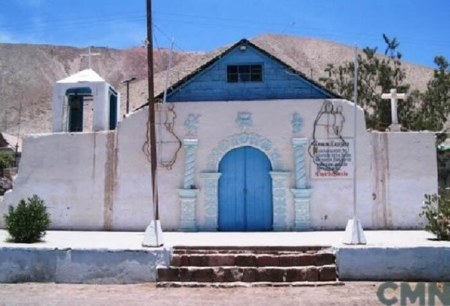
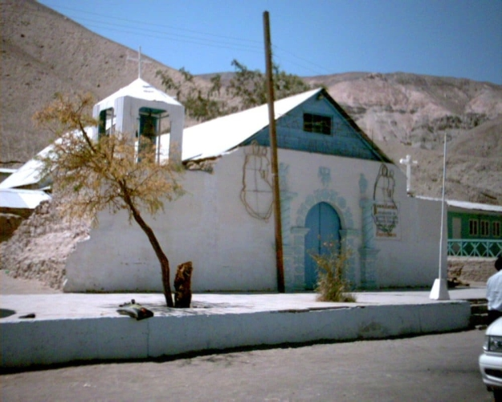
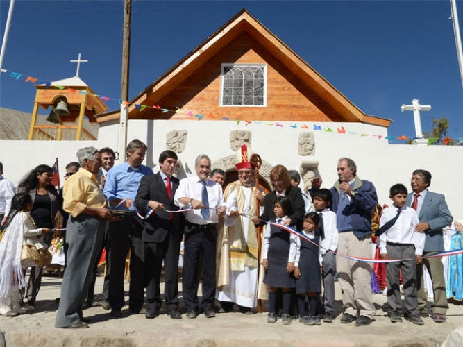
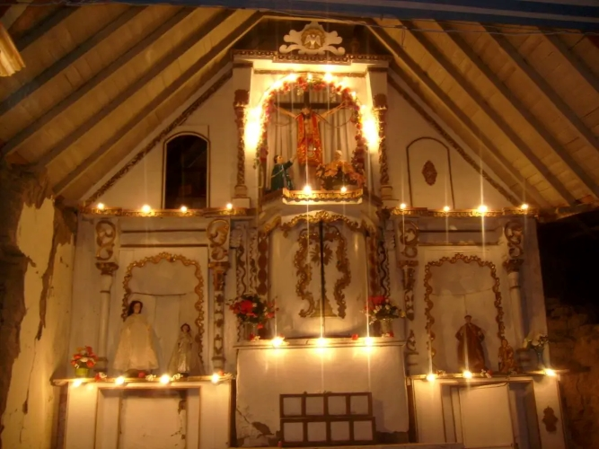

Laonzana es un pueblo ubicado en la quebrada de Tarapacá, aproximadamente a 117 Km de la ciudad de Iquique y a unos 1500 metros sobre el nivel del mar. Su conformación urbana se relaciona con la estrecha franja de terrenos que sus habitantes dedican a los trabajos de huertos agrícolas y que comercializan en el mercado agrícola de la ciudad de Iquique. Su Iglesia es Monumento Nacional y conserva en su portada talla menor de estilo barroco andino.
LAONZANA




ACTIVIDADES PRÓXIMAS

FIESTA RELIGIOSA
20 DE ABRIL

GLORIAS COMBATE NAVAL DE IQUIQUE
21 DE MAYO

FIESTAS PATRIAS
18 DE SEPTIEMBRE

DIA DE LOS SANTOS
01 DE NOVIEMBRE

NAVIDAD
24 DE DICIEMBRE
RELATOS DE LOS POBLADORES
Si deseas contar un relato acerca del pueblo o una anecdota que recuerdes dentro del pueblo, puedes escribirla a continuacion:




IGLESIA DE LAONZANA
La capilla de Laonzana, situada en la quebrada de Tarapacá, tiene una historia rica y significativa para la región de Tarapacá. Fue construida en el siglo XVII por colonos que buscaban establecer una comunidad en esta región. La capilla se convirtió en un centro espiritual y social para los habitantes del pueblo, sirviendo no solo como lugar de culto, sino también como punto de encuentro para diversas actividades comunitarias.
A lo largo de los años, la capilla ha sido testigo de numerosos eventos históricos, incluyendo celebraciones religiosas, festividades locales y momentos de crisis. Su arquitectura refleja la influencia de estilos coloniales, con detalles que muestran la dedicación de los habitantes en su construcción y mantenimiento.
La capilla de Laonzana también ha jugado un papel importante en la preservación de las tradiciones culturales de la comunidad. Las festividades religiosas, especialmente la fiesta patronal, atraen a visitantes de otras regiones, lo que ayuda a mantener vivas las costumbres y la identidad local.
×

LOCALIZACIÓN EN EL MAPA
Puedes conocer este lugar a traves de la quebrada de Tarapacá siguiendo la
Ruta A-545, Laonzana, Huara, Tarapacá